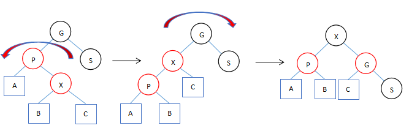

HashMap 的一些知识点
HashMap 的桶由链表变为红黑树（树化）的过程
红黑树的特性
- 节点为红色或者黑色
- 根节点必须是黑的
- 红色节点的左右子节点必须为黑色
- 一个节点到叶子节点的每条路径必须包含相同数目的黑色节点
颜色变换和两种选择
添加新节点后，因为新节点总是红色的，那么会有几种情况出现：
- 新节点是根节点，也就是说树是空的，根据规则二，把新节点设为黑色即可
- 新节点的父节点是黑色，或者父节点是根，满足规则
- 父节点是红色，违反规则三，需要进行 平衡 操作
平衡操作主要是根据情况组合使用下面三种转换（方块表示一棵满足红黑树规则的子树）：



几个问题
为什么要进行旋转？
由于 P（父节点 和 X（新节点）都为红色，违反规则三
为什么新节点总是红色？
因为添加新节点前的树结构是构建好的，一但我们添加黑色节点，无论添加在哪里都会破坏原有路径上的黑色节点的数量平等关系，所以插入红色节点是正确的选择
为什么要进行颜色变换？
如果叶子节点是红色的，那么我们在添加的时候只能添加黑色节点，然而添加任何黑色叶子节点都会违反规则四，所以要对其进行变换。进行变换后叶子节点是黑色的，而且我们默认添加的叶子节点是红色的，添加到红色的新节点后并不会违反规则四，所以这种变换很有用
第二种双变换中在树的内部怎么出现的红色的节点？
正是由于上面的颜色变换导致颜色变换后的节点与他的父节点产生了颜色冲突
HashMap 树化的过程
当满足下述条件时才将链表树化为红黑树
- 桶内元素超过
TREEIFY_THRESHOLD = 8（当桶内元素小于UNTREEIFY_THRESHOLD = 6时，红黑树会降级为链表） - 桶的数量超过
MIN_TREEIFY_CAPACITY（小于这个数量只是进行扩容操作）；无论是链表还是红黑树，都是为了解决哈希冲突，如果桶太少则应该首先增加桶的数量降低哈希冲突出现的概率，其次才是用红黑树增加查找效率
首先将 Node 转变为 TreeNode，此时还是链表结构；第一个节点即为根，后面的节点作为新节点，按规则依次添加到树里：比父节点小则添加到左子树，比父节点大则添加到右子树，从上往下搜索直到要添加的子树为空即为新节点的位置；每次插入新节点后都需要进行 平衡 操作
final V putVal(int hash, K key, V value, boolean onlyIfAbsent, boolean evict) {
// ... 将新元素添加至链表尾部（桶），如果桶的大小超过 TREEIFY_THRESHOLD，准备树化
for (int binCount = 0; ; ++binCount) {
if ((e = p.next) == null) {
p.next = newNode(hash, key, value, null);
if (binCount >= TREEIFY_THRESHOLD - 1) // -1 for 1st
treeifyBin(tab, hash);
break;
}
// ...
}
final void treeifyBin(Node<K,V>[] tab, int hash) {
// 如果桶的数量 < MIN_TREEIFY_CAPACITY，只是扩容
int n, index; Node<K,V> e;
if (tab == null || (n = tab.length) < MIN_TREEIFY_CAPACITY)
resize();
// 桶多于 MIN_TREEIFY_CAPACITY 才树化
// 将桶 tab[index] 里的节点转变为 TreeNode，但 此时还是链表
else if ((e = tab[index = (n - 1) & hash]) != null) {
TreeNode<K,V> hd = null, tl = null;
do {
TreeNode<K,V> p = replacementTreeNode(e, null);
if (tl == null)
hd = p;
else {
p.prev = tl;
tl.next = p;
}
tl = p;
} while ((e = e.next) != null);
if ((tab[index] = hd) != null)
// hd 是链表头，从它开始树化
hd.treeify(tab);
}
}// 将还是链表的桶树化，当前是链表头
final void treeify(Node<K,V>[] tab) {
// 链表里第一个元素作为红黑树初始的根
// 遍历链表，逐个添加到红黑树中
TreeNode<K,V> root = null;
for (TreeNode<K,V> x = this, next; x != null; x = next) {
next = (TreeNode<K,V>)x.next;
x.left = x.right = null;
if (root == null) {
x.parent = null;
x.red = false;
root = x;
}
else {
K k = x.key;
int h = x.hash;
Class<?> kc = null;
// 从根开始，自上而下找位置
// 比父节点小则插入到左子树，比父节点大则插入到右子树，直到所插入的位置为 null
for (TreeNode<K,V> p = root;;) {
// x - 新节点，p - 父节点，h - 新节点 hash，ph - parent hash
// dir == -1，新节点比父节点小，添加到左子树；dir == 1，新节点比父节点大，添加到右子树
int dir, ph;
K pk = p.key;
if ((ph = p.hash) > h)
dir = -1;
else if (ph < h)
dir = 1;
else if ((kc == null &&
(kc = comparableClassFor(k)) == null) ||
(dir = compareComparables(kc, k, pk)) == 0)
dir = tieBreakOrder(k, pk);
// xp - 新节点的父节点
// 一直找，直到新节点需要插入的位置是为 null，那么就把新节点放在那
TreeNode<K,V> xp = p;
if ((p = (dir <= 0) ? p.left : p.right) == null) {
x.parent = xp;
if (dir <= 0)
xp.left = x;
else
xp.right = x;
// 插入新节点后可能会破坏红黑树的平衡，每次插入后都要执行平衡操作
root = balanceInsertion(root, x);
break;
}
}
}
}
moveRootToFront(tab, root);
}// 插入新节点后需要平衡红黑树
static <K,V> TreeNode<K,V> balanceInsertion(TreeNode<K,V> root, TreeNode<K,V> x) {
x.red = true; // 新节点总是红色的
// xp - 新节点的 parent，xpp - 新节点的祖父，xppl - 祖父的左孩子，xppr - 祖父的右孩子
for (TreeNode<K,V> xp, xpp, xppl, xppr;;) {
// 新节点没有父节点，说明它是根节点，根节点必须是黑色
if ((xp = x.parent) == null) {
x.red = false;
return x;
}
// 1，不是根节点且父节点是黑色，满足红黑树的条件，返回即可
// 2，祖父为 null 说明父节点为根，根一定是黑色，新节点为红色，满足条件
else if (!xp.red || (xpp = xp.parent) == null)
return root;
// 父节点是红色且有祖父节点，那就比较麻烦了，必须要进行旋转和颜色变换操作，此时父节点是祖父的左孩子
if (xp == (xppl = xpp.left)) {
// 新节点是红色，父节点也是红色，父节点旁边的兄弟节点也是红色（由于当前红黑树除新节点外是平衡的，所以祖父肯定是黑色）
// 那么进行颜色变换：将父节点和它的兄弟节点变为黑色，祖父变为红色，对应图三
// 祖父变色后，可能引起祖父上面不平衡，所以下次循环要操作祖父
if ((xppr = xpp.right) != null && xppr.red) {
xppr.red = false;
xp.red = false;
xpp.red = true;
x = xpp;
}
else {
// 父节点的兄弟为黑色 or 为空，那么就要通过旋转解决两个红色节点相连的问题
// 新节点是右孩子，对应图二的双旋，这里是第一次的左旋
if (x == xp.right) {
root = rotateLeft(root, x = xp);
xpp = (xp = x.parent) == null ? null : xp.parent;
}
// 继续上面的（左旋）后的第二次右旋
// 或者对应图一的单旋（右旋）
if (xp != null) {
xp.red = false;
if (xpp != null) {
xpp.red = true;
root = rotateRight(root, xpp);
}
}
}
}
// 同样是旋转和颜色变换操作，只不过父节点现在是祖父的右孩子，流程跟上面差不多的
else {
if (xppl != null && xppl.red) {
xppl.red = false;
xp.red = false;
xpp.red = true;
x = xpp;
}
else {
if (x == xp.left) {
root = rotateRight(root, x = xp);
xpp = (xp = x.parent) == null ? null : xp.parent;
}
if (xp != null) {
xp.red = false;
if (xpp != null) {
xpp.red = true;
root = rotateLeft(root, xpp);
}
}
}
}
}
}扩容的过程
计算扩容大小和下一次扩容阈值
扩容时，容量翻倍，下一次扩容阈值 threshold 也翻倍；特殊情况是当前容量小于默认初始容量 DEFAULT_INITIAL_CAPACITY = 16 时，threshold 不翻倍而是取扩容后的负载因子倍数
第一次扩容时 table 尚未初始化，当前容量为零，如果构造函数有设置 initialCapacity，则扩容后的大小为 initialCapacity，下一次扩容阈值为 initialCapacity * loadFactor；否则扩容后大小和负载因子都取默认值
第一次扩容时，threshold 取 initialCapacity * loadFactor，而 loadFactor 总是小于等于 1 的，所以 threshold 总是小于等于 capacity，后续即使翻倍 threshold 也是小于等于 capacity
final Node<K,V>[] resize() {
Node<K,V>[] oldTab = table;
int oldCap = (oldTab == null) ? 0 : oldTab.length;
int oldThr = threshold;
int newCap, newThr = 0;
// table 已被初始化的情况（table != null）
if (oldCap > 0) {
// 限制最大容量（MAXIMUM_CAPACITY = 1 << 30）
// 因为容量是个 int 值，要限制下不至于溢出
if (oldCap >= MAXIMUM_CAPACITY) {
threshold = Integer.MAX_VALUE;
return oldTab;
}
// 最常见的情况：capacity 和 threshold 翻一倍
else if ((newCap = oldCap << 1) < MAXIMUM_CAPACITY &&
oldCap >= DEFAULT_INITIAL_CAPACITY)
newThr = oldThr << 1; // double threshold
}
// 第一次扩容，table 还未被初始化但是 threshold 有值，那么把它作为扩容后的容量
// 对应 HashMap(initialCapacity, loadFactor)，HashMap(initialCapacity) 和 HashMap(Map<? extends K, ? extends V> m) 这三种情况
// 前两种情况 threshold 可以通过 initialCapacity 算出来，后一种情况可以通过 Map 大小算出来
else if (oldThr > 0) // initial capacity was placed in threshold
newCap = oldThr;
// table 还未被初始化并且 threshold 也没有值，对应 HashMap()
// 没有传入 initialCapacity，threshold 没有参考值所以为零，那么使用默认值
else { // zero initial threshold signifies using defaults
newCap = DEFAULT_INITIAL_CAPACITY;
newThr = (int)(DEFAULT_LOAD_FACTOR * DEFAULT_INITIAL_CAPACITY);
}
// 1，当 table 尚未初始化且 threshold/initialCapacity 有值
// 2，当 table 已初始化但扩容前的容量 < DEFAULT_INITIAL_CAPACITY
// 下一次扩容大小 newThr 为扩容后到达负载因子的水平
if (newThr == 0) {
float ft = (float)newCap * loadFactor;
newThr = (newCap < MAXIMUM_CAPACITY && ft < (float)MAXIMUM_CAPACITY ?
(int)ft : Integer.MAX_VALUE);
}
// ...
}重新 hash
- 只有一个元素，重新 hash 算出新位置即可
- 链表的情况，因为
capacity总是 2 的次方，capacity形如100000而capacity - 1形如011111，通过e.hash & oldCap) == 0把链表拆分为两个链表 low（高位为 0）和 high（高位为 1），low 留在原位newTab[j]，high 迁移到newTab[j + oldCap] - 如果是红黑树，跟链表一样先拆分和迁移，如果链表里元素数量小于等于
UNTREEIFY_THRESHOLD = 6则转化为链表，否则重新构建红黑树
为什么拆分链表是可行的？假设当前容量 4 扩容后为 8，那么 hash 的右值为 0011 和 0111（object.hash() * (capacity - 1)，扩容的翻倍操作实际上是左移一位），可以看到区别就是高位对应的 object.hash() 值，高位 hash 为零即使扩容了位置也不变，高位 hash 为 1 则迁移到 oldCap + j 的位置上（obj 相当于高位对应的部分，j 则是低位对应的部分）
final Node<K,V>[] resize() {
// ...
Node<K,V>[] newTab = (Node<K,V>[])new Node[newCap];
table = newTab;
if (oldTab != null) {
for (int j = 0; j < oldCap; ++j) { // 遍历旧 table
Node<K,V> e;
if ((e = oldTab[j]) != null) {
oldTab[j] = null;
// 如果桶中只有一个元素，重新计算位置并迁移
if (e.next == null)
newTab[e.hash & (newCap - 1)] = e;
// 红黑树，拆分并重建红黑树
else if (e instanceof TreeNode)
((TreeNode<K,V>)e).split(this, newTab, j, oldCap);
// 桶里是链表，根据高位是 0 还是 1 把链表拆分为两个链表（low 和 high）
// low 留在原来的位置，hihg 迁移到新位置
else { // preserve order
Node<K,V> loHead = null, loTail = null;
Node<K,V> hiHead = null, hiTail = null;
Node<K,V> next;
do {
next = e.next;
if ((e.hash & oldCap) == 0) {
if (loTail == null)
loHead = e;
else
loTail.next = e;
loTail = e;
}
else {
if (hiTail == null)
hiHead = e;
else
hiTail.next = e;
hiTail = e;
}
} while ((e = next) != null);
if (loTail != null) {
loTail.next = null;
newTab[j] = loHead;
}
if (hiTail != null) {
hiTail.next = null;
newTab[j + oldCap] = hiHead;
}
}
}
}
}
return newTab;
}
// 红黑树重新 hash 的过程
final void split(HashMap<K,V> map, Node<K,V>[] tab, int index, int bit) {
// 跟链表一样根据高位拆分为 low（0）和 high（1）两个链表
TreeNode<K,V> b = this;
TreeNode<K,V> loHead = null, loTail = null;
TreeNode<K,V> hiHead = null, hiTail = null;
int lc = 0, hc = 0;
for (TreeNode<K,V> e = b, next; e != null; e = next) {
next = (TreeNode<K,V>)e.next;
e.next = null;
if ((e.hash & bit) == 0) {
if ((e.prev = loTail) == null)
loHead = e;
else
loTail.next = e;
loTail = e;
++lc;
}
else {
if ((e.prev = hiTail) == null)
hiHead = e;
else
hiTail.next = e;
hiTail = e;
++hc;
}
}
// 拆分后，如果 < UNTREEIFY_THRESHOLD 则转为链表，否则重新构建红黑树
if (loHead != null) {
if (lc <= UNTREEIFY_THRESHOLD)
tab[index] = loHead.untreeify(map);
else {
tab[index] = loHead;
if (hiHead != null) // (else is already treeified)
loHead.treeify(tab);
}
}
if (hiHead != null) {
if (hc <= UNTREEIFY_THRESHOLD)
tab[index + bit] = hiHead.untreeify(map);
else {
tab[index + bit] = hiHead;
if (loHead != null)
hiHead.treeify(tab);
}
}
}